4.6 Light
Engine: exposure, contrast and a 4-zone tone curve (Blacks/Shadows/Highlights/Whites, each zone being a cosine-weighted window around its own luminance center), color/toning, 3-radius texture/detail, bloom, an edge-protected smoothing ("Softness"), grain and vignetting — all independently adjustable across a subject and a background defined by a polygon outline drawn with the mouse.
Thumbnails
| Thumbnail | Effect |
|---|---|
| Neutral | No transformation. |
| Balance | A subtle setting: slight overexposure (+15), markedly raised shadows, lowered highlights — a gentle rebalancing of the dynamic range, with no color or texture added. |
| Low Key | Dark and contrasty: strong underexposure, marked contrast, deepened blacks/shadows (with black-point clipping), highlights and whites barely touched (bright accents survive); slight desaturation, cold cast, blue-cyan toning in the shadows and a subtle orange toning in the highlights; boosted clarity/texture/sharpness, pronounced dark vignetting, visible grain. The classic dark, "lived-in" look. |
| High Key | Bright and airy: strong overexposure, reduced contrast, widely raised shadows, a raised black floor (never pure black — the "milky" look proper to high key); slight desaturation, warm pastel cast, golden toning in the shadows and highlights; slightly reduced clarity/texture (more softness), brightening vignetting (not darkening), minimal grain. |
| Dramatic | Very strong contrast (this preset's dominant setting), exposure and shadows barely touched on purpose (an earlier, too-dark version crushed the look rather than energizing it), raised whites for a crisp glint against deep blacks; moderate desaturation, cold cast, teal toning (195°) in the shadows / orange toning (35°) in the highlights — a classic cinematic "teal & orange"; clarity/texture/sharpness at maximum, the strongest vignetting and grain of the 5 presets. The "movie poster" look. |
| Soft | Soft and low-contrast: raised shadows, highlights and whites slightly lowered, a raised black floor — a compressed, hazy tonal range; slight desaturation, warm cast; clarity/texture/sharpness all negative (no accentuation mechanism active); the only preset to enable a real bloom (warm glow diffused from bright areas) and an edge-protected smoothing (softens flat areas, preserves crisp edges); minimal grain. |
Manual settings
Exposure & Tone
- Strength (
intensity, 0..1) — blends the graded result with the original image.
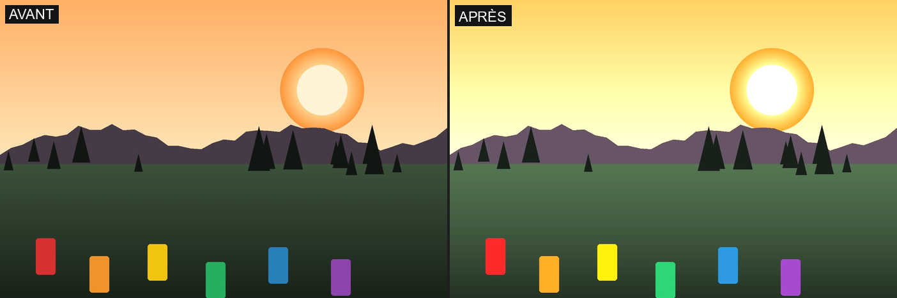
- Exposure (
exposure, -100..100) — multiplicative light gain (±2 EV across the whole range), applied before everything else.
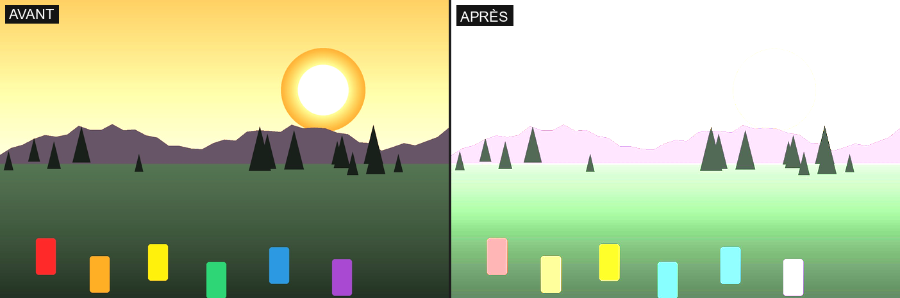
- Contrast (
contrast, -100..100) — pushes luminance away from (positive) or pulls it toward (negative) its pivot.
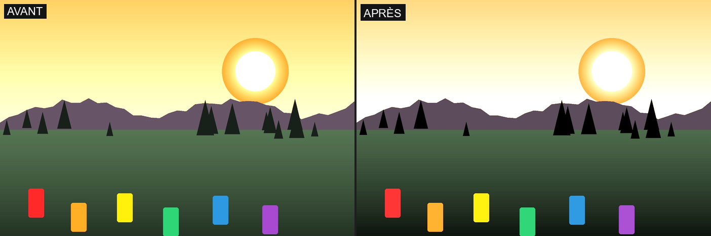
- Contrast pivot (
contrast_pivot, 0.2..0.8) — the luminance value around which contrast pivots: lower, and bright tones move more; higher, and it's the dark tones.
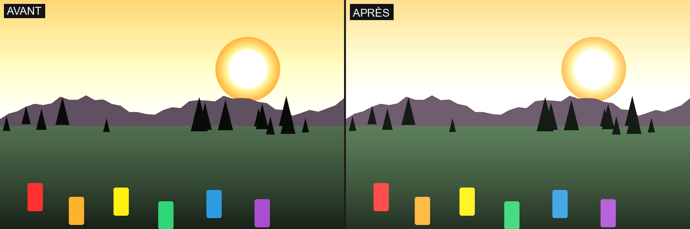
- Blacks (
blacks, -100..100) — the darkest zone of the 4-zone curve (center 0.00).
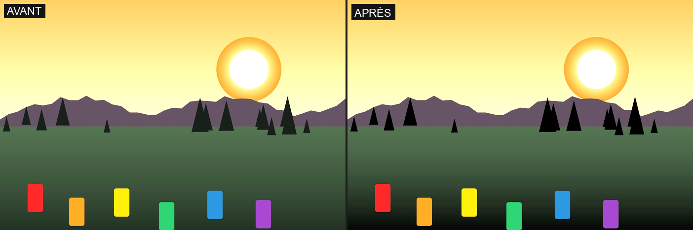
- Shadows (
shadows, -100..100) — the dark zone (center 0.28).
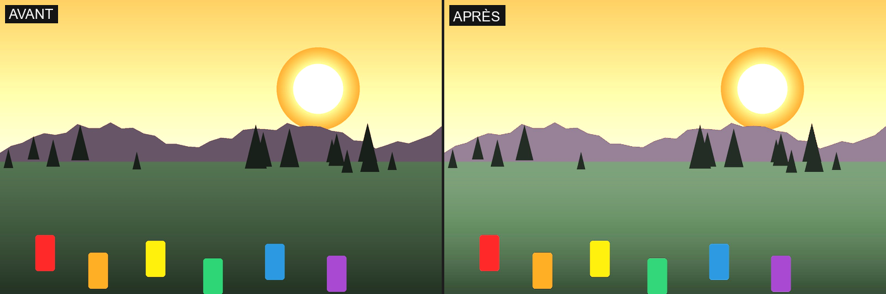
- Highlights (
highlights, -100..100) — the bright zone (center 0.72).
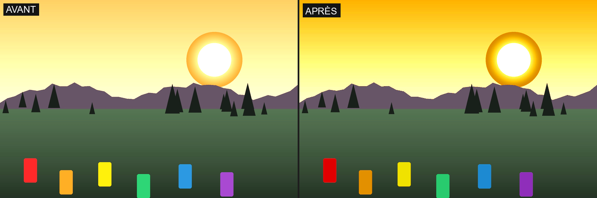
- Whites (
whites, -100..100) — the brightest zone of the curve (center 1.00).
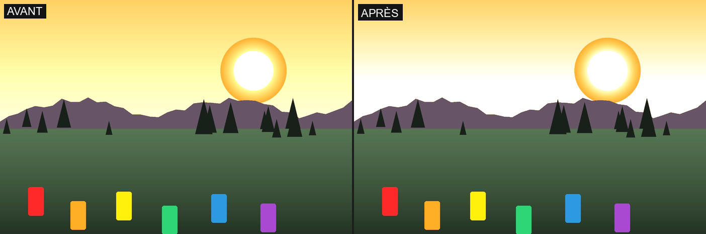
- Black point (
black_point, 0..0.10) — crushes near-black tones toward pure black.
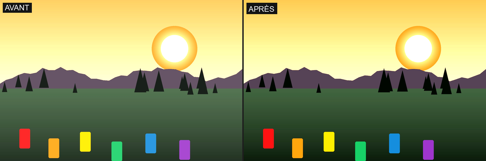
- Black floor (
black_floor, 0..0.10) — conversely, raises pure black toward a matte/washed-out gray (the "never quite black" look of High Key).
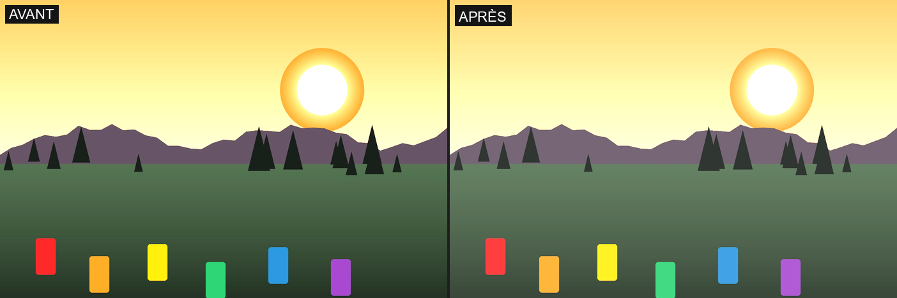
Colour
- Saturation (
saturation, ×0..2) — global saturation multiplier.
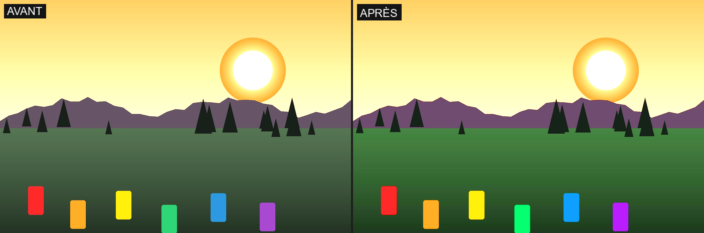
- Temperature (
temperature, -1000..1000).
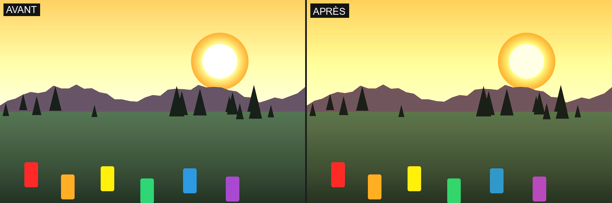
- Tint (
tint, -20..20).
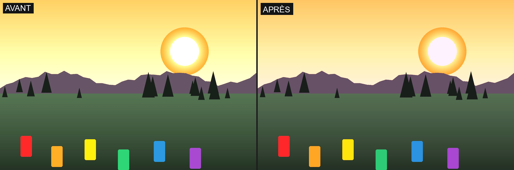
- Shadow tint (hue) (
split_shadow_hue, 0..360°) — the color blended into the dark tones.
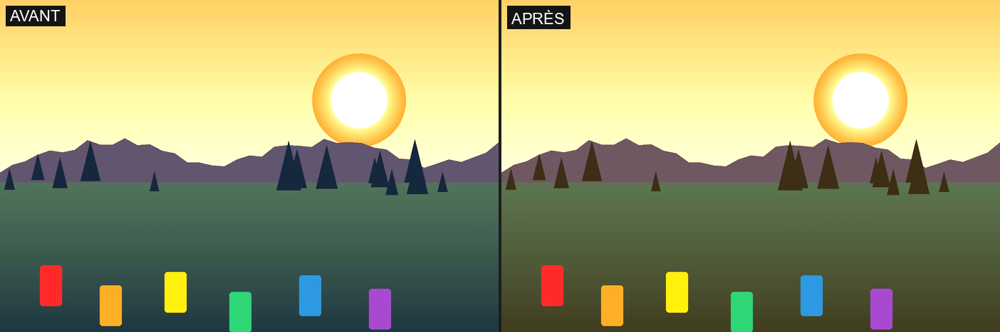
- Shadow tint (strength) (
split_shadow_strength, 0..20%) — intensity of that blend.
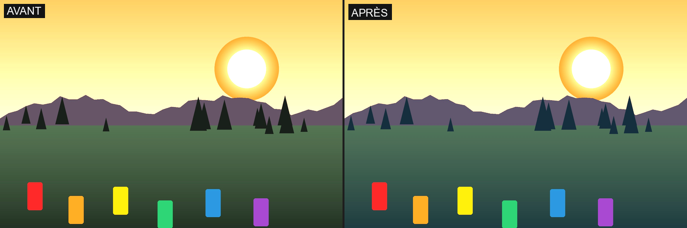
- Highlight tint (hue) (
split_highlight_hue, 0..360°).
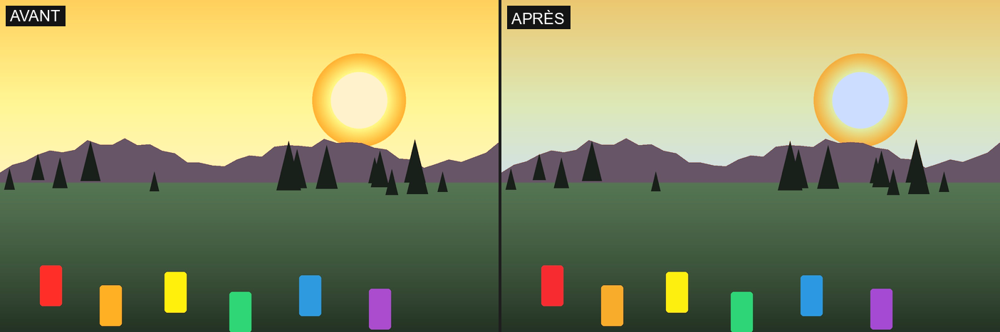
- Highlight tint (strength) (
split_highlight_strength, 0..20%).
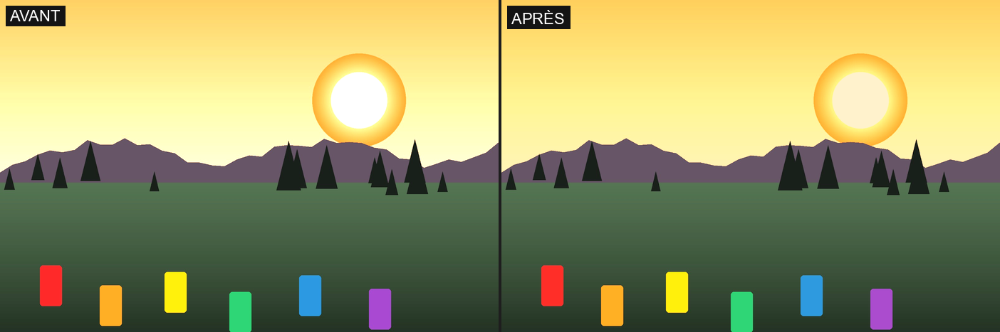
- HSL saturation (
hsl_saturation_scale, ×0..2) and HSL luminance (hsl_luminance_scale, ×0..2) — meant to amplify/reduce per-hue saturation/luminance adjustments specific to the selected look, on the same principle as Film (§4.1). Not illustrated here: as of today, none of the 6 shipped presets populate these internal tables — both sliders are therefore inert regardless of the preset, reserved for a future hue-calibrated look.
Texture & Sharpness
- Clarity (
clarity, -100..100) — wide-radius local contrast.
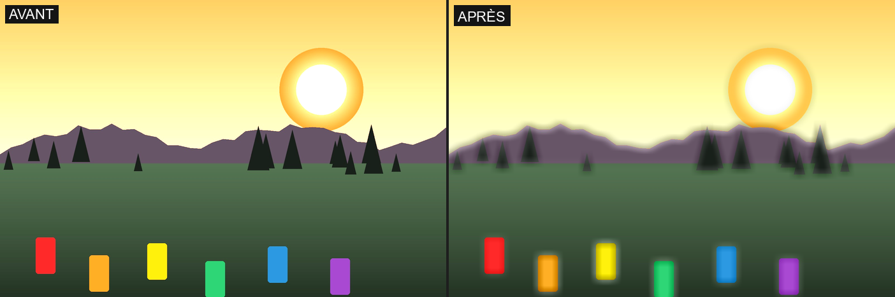
- Texture (
texture, -100..100) — medium-radius detail, finer than Clarity.
- Sharpness (
sharpness, -100..100) — fine accentuation (1 px radius).
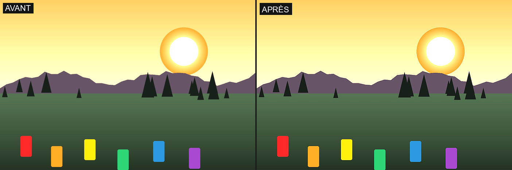
- Dehaze (
dehaze, -100..100) — a combined correction (local contrast + black-point recentering + saturation), an approximation of dehazing rather than a physical simulation.
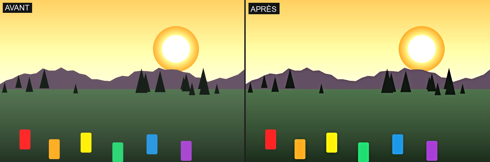
Bloom & Softness
- Bloom (threshold) (
bloom_threshold, 0..1) — the luminance above which a pixel contributes to the diffused glow.
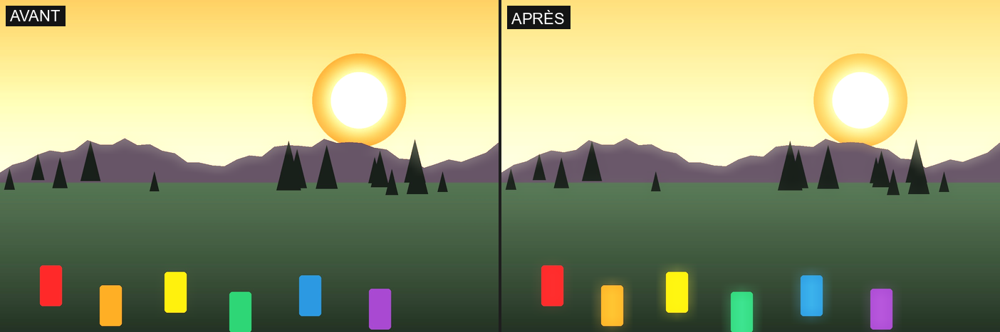
- Bloom (amount) (
bloom_amount, 0..50%) — opacity of the glow, blended in Lighten mode.
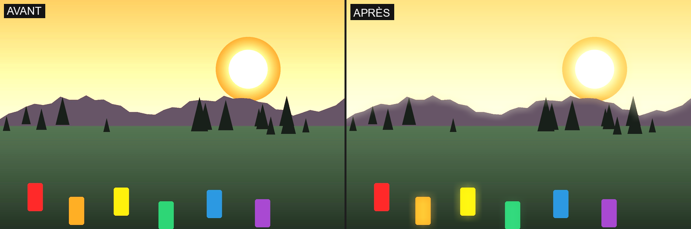
- Bloom (radius) (
bloom_radius, 0..5% of the width) — spread of the blur that sources the glow.
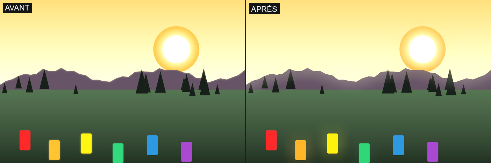
- Bloom (warmth) (
bloom_warmth, -500..500) — warms/cools the glow's own color, independently of the general Temperature.
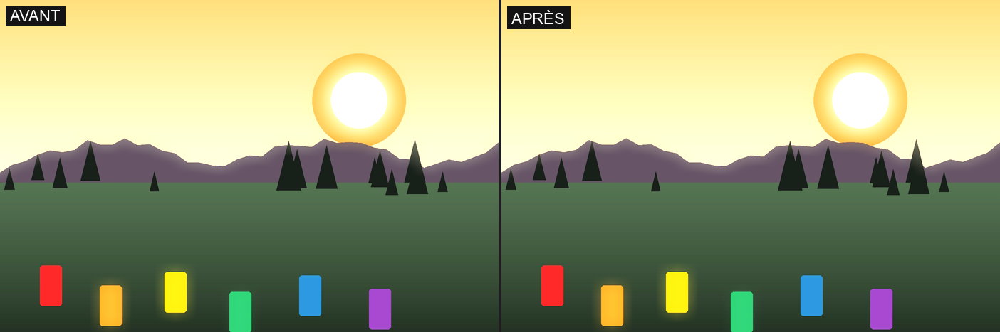
- Softness (amount) (
soft_detail_amount, 0..50%) — strength of a blur blended across the whole image.
- Softness (radius) (
soft_detail_radius, 0..8 px) — the radius of that blur.
- Edge protection (
edge_protection, 0..100%) — resistance of detected crisp edges to the Softness blur: higher means flat areas smooth out further while edges (eyes, object boundaries) stay crisp.
Finishing
- Vignetting (
vignette, -100..100) — radial darkening (negative) or brightening (positive) of the edges.
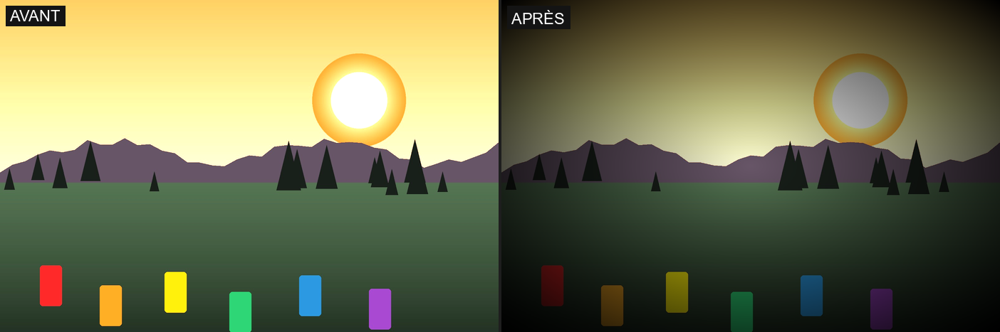
- Grain (
grain, 0..0.05).
Subject/Background Mask
A polygon outline (vertices movable with the mouse, clickable edge midpoints to insert a new vertex, up to 32 vertices, feathered edge) splits the image into two regions. Of the 32 settings above, 19 become independently adjustable for the Subject and the Background (exposure, contrast, blacks/shadows/highlights/whites, black point, black floor, temperature, tint, the strength of both tints, clarity, texture, sharpness, dehaze, saturation, and both HSL scales); the other 13 — contrast pivot, the hue of both tints, the entire Bloom & Softness group, and all of Finishing (vignetting, grain) — stay global, applied once on the composited image, never split by the mask. With no outline drawn, the Background setting applies to the whole image.
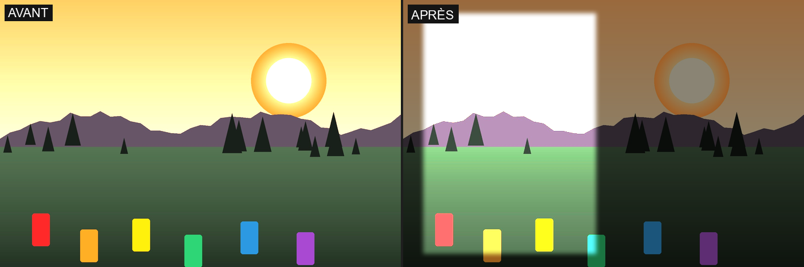
Example: an outline covering the left half of the photo, with Subject Exposure at +60 and Background Exposure at −60 — an extreme case to make the split obvious.